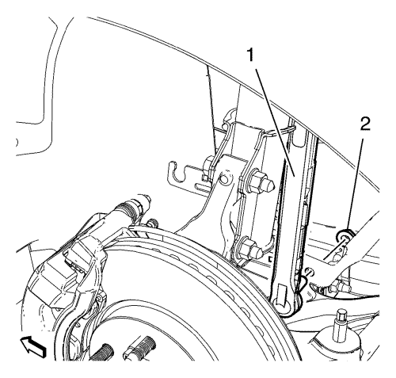
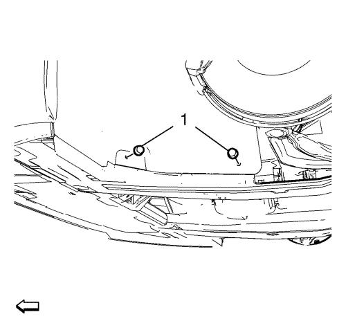
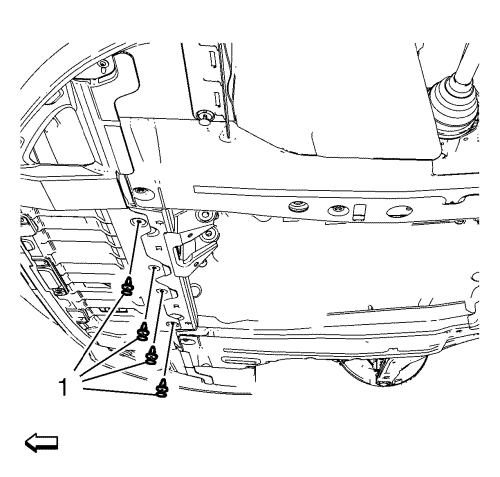
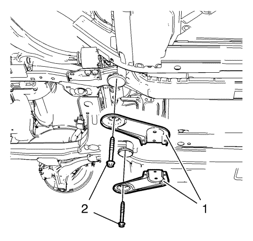
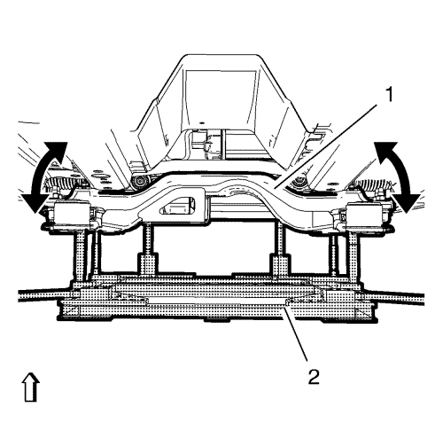
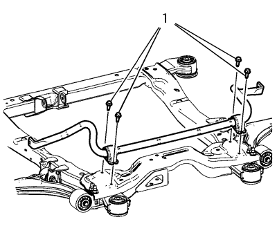

Sustitución del eje del estabilizador
Herramientas especiales
| • | CH-904 Bastidor inferior |
| • | CH-49289 Adaptador de centrado |
| • | EN-45059 Kit de goniómetro de par de apriete |
Si desea informarse sobre herramientas regionales equivalentes, consultar Herramientas especiales .
Procedimiento de desmontaje
- Gire las ruedas delanteras hasta la posición recta y asegúrese de que el volante no se mueve.

- Extraiga los 2 tornillos inferiores (1) del husillo intermedio de la dirección.
- Desmonte el eje intermedio de la dirección del mecanismo de la dirección.
- Elevar el vehículo y soportarlo de manera segura. Consultar Elevación y soporte en alto del vehículo .
- Desmonte los conjuntos de neumático y llanta. Consultar Desmontaje y montaje de la rueda y el neumático .
- Desmonte el aislamiento del compartimento delantero, si el vehículo lo posee. Consultar Sustitución del aislamiento del compartimento delantero .
- Desmonte el tubo de escape delantero. Consultar Sustitución del tubo de escape delantero → 2.0 L diesel LNP → LDE,LLU,LXT,LXV,L2W,2H0 .

- Desmonte la tuerca de eje de varillaje del estabilizador inferior (2) a ambos lados.
- Desmonte el eje de la varilla del estabilizador (1) del eje del estabilizador.
- Desmonte el eje de varillaje del estabilizador (1) del estabilizador.

- Desmonte 4 sujeciones (1) de la cubierta lateral del motor a ambos lados.

- Desmonte 4 sujeciones (1) de la cubierta frontal del compartimento del motor.

- Desmonte los pernos delantero (1) y trasero (2) del soporte del alojamiento del cambio.

- Desmonte 2 pernos del marco de suspensión trasero (2).
Desmonte los refuerzos del bastidor trasero (1).

- Coloque y ajuste el elevador hidráulico en conexión con el bastidor CH-904 y el adaptador CH-49289-50 (2) en el bastidor de suspensión (1). Abra ligeramente la cubierta frontal del compartimento del motor.
- Baje el bastidor de la suspensión un máximo de 55 mm.

- Desmonte los 4 pernos de la abrazadera del aislante del árbol de la barra estabilizadora (1)
- Desmonte el árbol de la barra estabilizadora.
Procedimiento de montaje
- Monte el árbol de la barra estabilizadora.
Precaución:Consulte Precaución con las fijaciones en la sección Prólogo.
- Monte los 4 pernos de la abrazadera del aislante de la barra estabilizadora delantera (1) y apriételos a 22 N·m (17 lib. pie) más 30 grados.

- Saque los pernos de posicionamiento (1) del adaptador CH-49289.
- Eleve el bastidor (1) con cuidado, con el adaptador CH-49289 (2).
- Monte los 2 refuerzos (1) del bastidor.
- Monte los 2 pernos del marco de suspensión trasero (2) y apriételos a 160 N·m (119 lib. pie).
- Monte el perno (1) del alojamiento delantero del cambio y apriételo a 58 N·m (43 lib. pie).
- Monte el perno (2) del soporte del alojamiento trasero del cambio y apriételo a 100 N·m (74 lib. pie).
- Monte y apriete las 4 sujeciones (1) de la cubierta lateral del motor a ambos lados.
- Monte y apriete las 4 sujeciones (1) de la cubierta frontal del compartimento del motor.
- Monte el aislamiento del compartimento delantero, si el vehículo lo posee Sustitución del aislamiento del compartimento delantero .
- Monte el tubo de escape delantero. Consultar Sustitución del tubo de escape delantero → 2.0 L diesel LNP → LDE,LLU,LXT,LXV,L2W,2H0 .
- Monte y apriete una tuerca de eje de varillaje estabilizador inferior (2) en ambos lados a 35 N·m (26 lib. pie).
- Bajar el vehículo.
- Instalar los conjuntos de rueda y neumático. Consultar Desmontaje y montaje de la rueda y el neumático .
| © Copyright Chevrolet. Reservados todos los derechos |